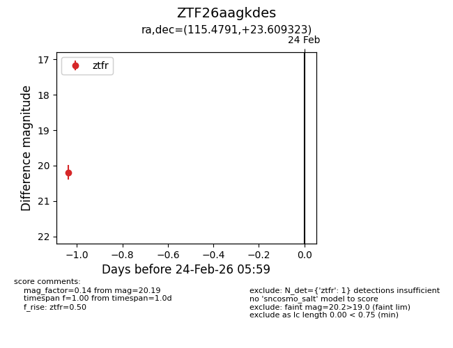
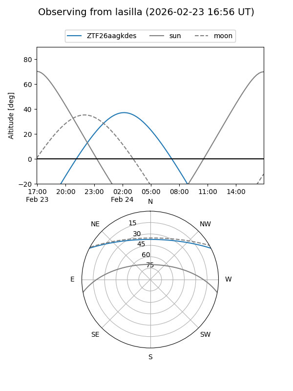
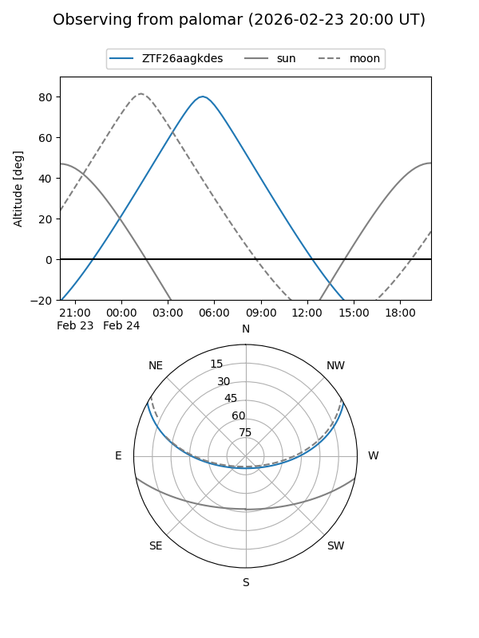

ZTF26aagkdes
Target ZTF26aagkdes at 2026-02-24 09:08
Aliases and brokers:
FINK: link
Lasair: link
ALeRCE: link
alt names
ZTF26aagkdes (ztf,fink_ztf)
Coordinates:
equatorial (ra, dec) = 115.4791,+23.60932
equatorial (HMS+DMS) = 07:41:54.98,+23:36:33.56
galactic (l, b) = (196.4147,+21.14858)
Flags:
Photometry:
last ztfr=20.19
1 ztfr detections
Lightcurve

Visibility


Additional plots